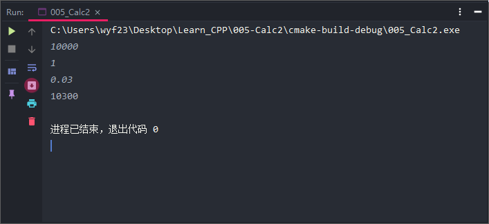
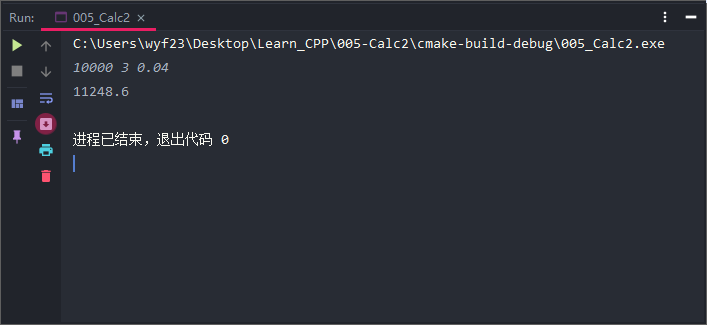
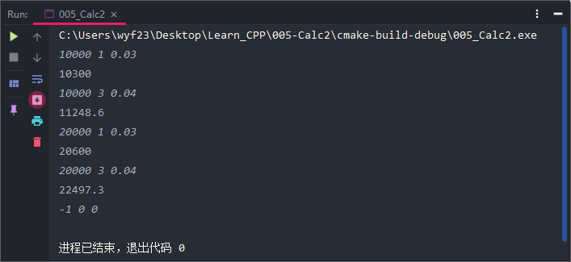
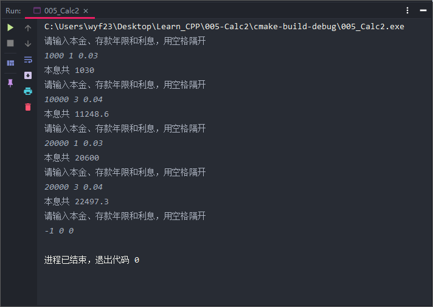

简介：例子学习——计算存款本息。
编写程序，计算银行存款本息
用户输入存款金额money，存款期years和年利率rate，根据公式：
计算到期存款本息。
分析
可以用money，years，rate，sum分表表示存款本金，存款年限，存款利率和到期本息
这些数可能为实数，说明符号表示实数，用double。例如
double money,years,rate,sum;
程序中，加法用“+”号，乘法用“*”号。
C++乘方
- pow(x,y)；
- 表示，pow是函数名。x，y均应为双精度实数；
数学函数包含在头文件cmath中
包含头文件
输入用cin，输出用cout。
初步代码
示例代码
1
2
3
4
5
6
7
8
9
10
| #include <iostream>
#include <cmath>
using namespace std;
int main() {
double money,years,rate,sum;
cin>>money>>years>>rate;
sum=money*pow((1+rate),years);
cout<<sum<<endl;
return 0;
}
|
执行结果


问题来了
我们无法多次计算，每次计算都需要重新运行程序，非常麻烦。
改良思路
伪代码
1
2
3
4
5
| while (<条件>){
<循环体(一段程序)>
}
<其他语句>
|
流程图
本题的循环条件可以设置为：momey>0
改进代码
示例代码
1
2
3
4
5
6
7
8
9
10
11
12
13
| #include <iostream>
#include <cmath>
using namespace std;
int main() {
double money,years,rate,sum;
cin>>money>>years>>rate;
while (money>0){
sum=money*pow((1+rate),years);
cout<<sum<<endl;
cin>>money>>years>>rate;
}
return 0;
}
|
执行结果

过程分析
新的问题
问题描述
- 程序运行，屏幕上闪光标，意义不明确。
- 程序输出，一个数字，不知道是什么意思，不直观。
解决方法
- 输出提示信息。
- 在输入数据前输出“请输入本金、存款年限和利息，用空格隔开”。
- 在输出数据前显示“本息共XX”。
最终完成的代码
示例代码
1
2
3
4
5
6
7
8
9
10
11
12
13
14
15
16
| #include <iostream>
#include <cmath>
using namespace std;
int main() {
double money,years,rate,sum;
cout<<"请输入本金、存款年限和利息，用空格隔开"<<endl;
cin>>money>>years>>rate;
while (money>0){
sum=money*pow((1+rate),years);
cout<<"本息共 ";
cout<<sum<<endl;
cout<<"请输入本金、存款年限和利息，用空格隔开"<<endl;
cin>>money>>years>>rate;
}
return 0;
}
|
执行结果

总结
函数的使用
| 数学函数名 |
C++函数名 |
备注 |
| 乘方 |
pow(x,y) |
|
| 正弦 |
sin(x) |
x为弧度 |
| 余弦 |
cos(x) |
x为弧度 |
| 正切 |
tan(x) |
x为弧度 |
| $e^x$ |
exp(x) |
|
| $log_ex$ |
log(x) |
e为底 |
| $log_{10}x$ |
log10(x) |
10为底 |
| 平方根 |
sqrt(x) |
|
| 绝对值 |
fabs(x) |
循环，有条件地重复执行一段程序
1
2
3
4
| while (<条件>){
<循环体(一段程序)>
}
<其他语句>
|
编程的好习惯